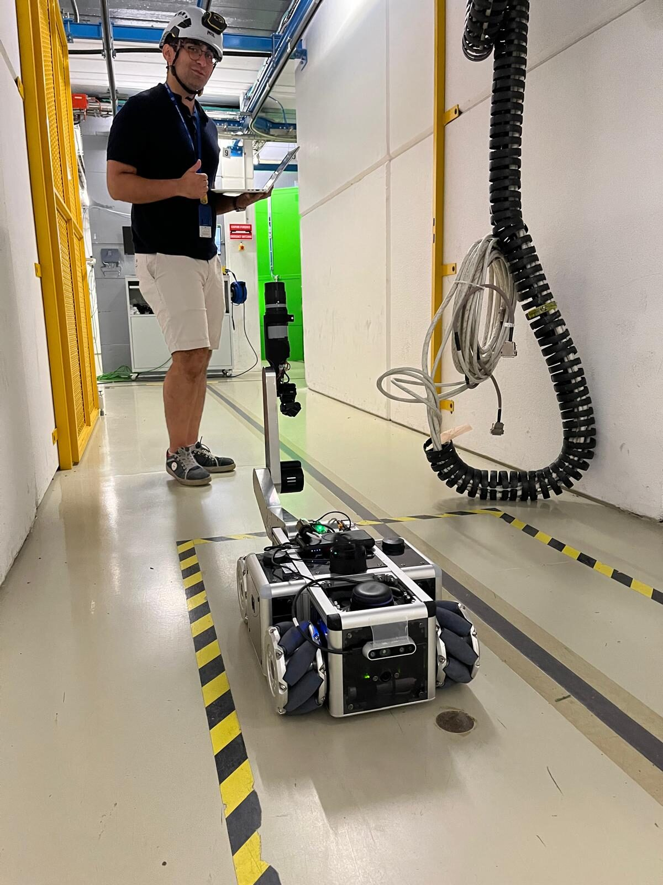
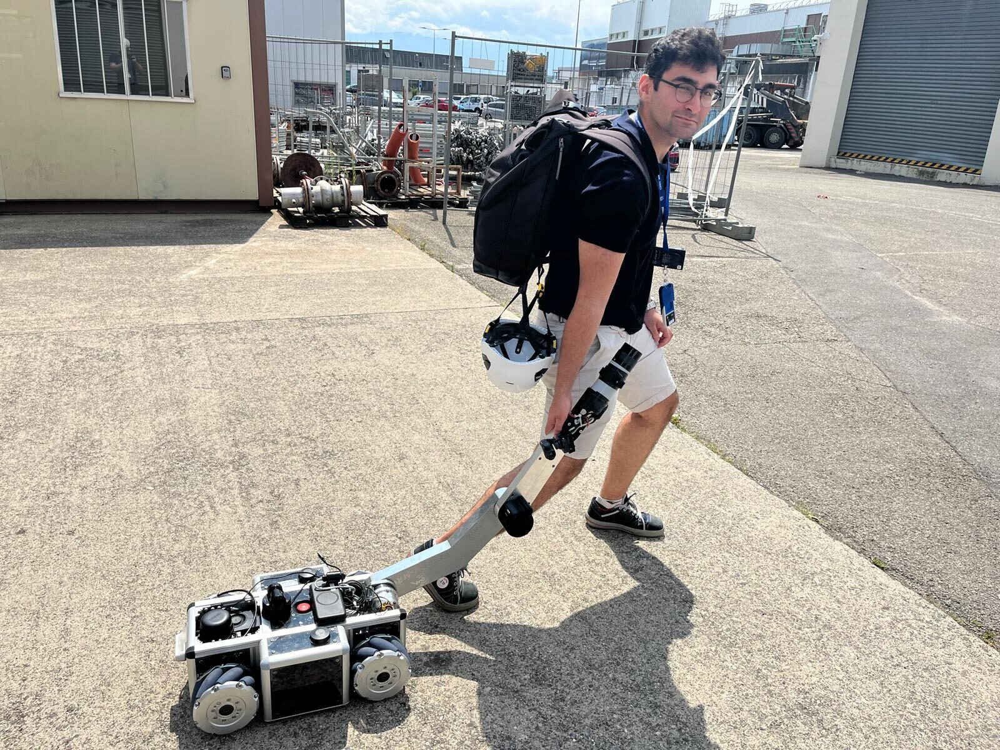
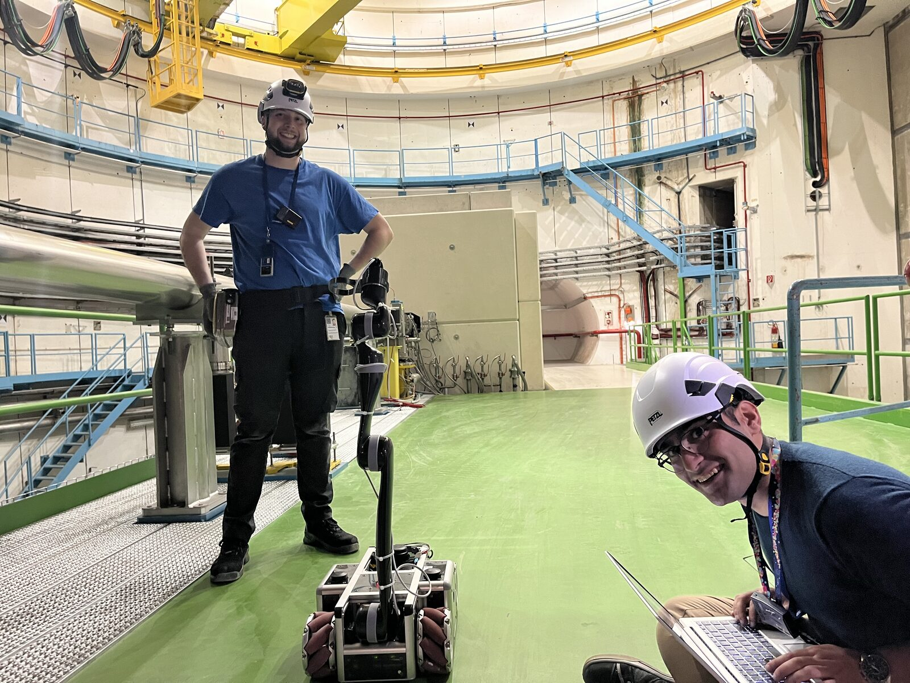

01 / CHARMBot corridor test
The presentation describes the person as its presenter, Pejman Habibiroudkenar.
Open original photo ↗Original photographs downloaded from Pejman’s HIP–CERN presentation. The first two are described as presenter photos in the source. The third is an additional team photo.

The presentation describes the person as its presenter, Pejman Habibiroudkenar.
Open original photo ↗
The presentation describes the person as its presenter, Pejman Habibiroudkenar.
Open original photo ↗
Additional team photo; the source caption does not name the individuals.
Open original photo ↗The current PJM Robotics site contains project demonstrations and maps, but no labeled photographs of Pejman. No image generation was used.